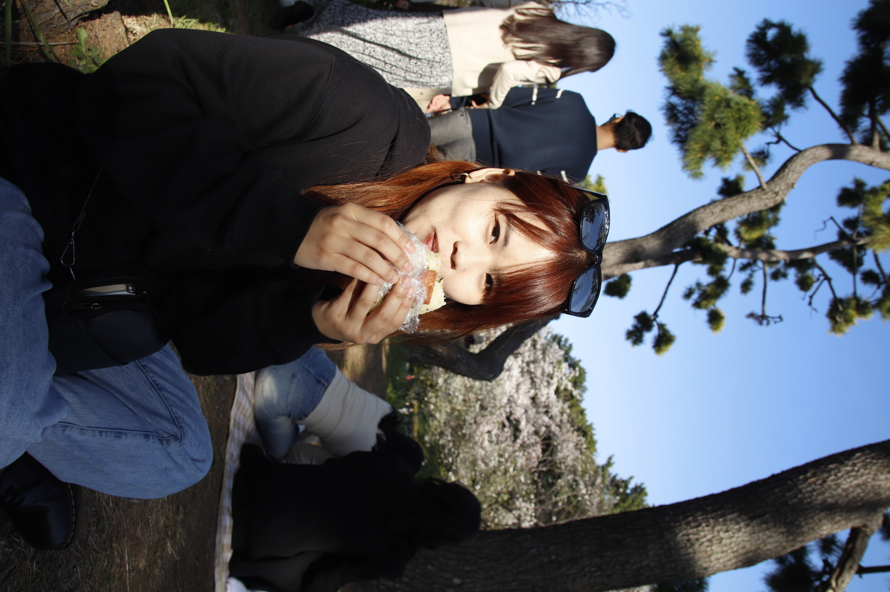
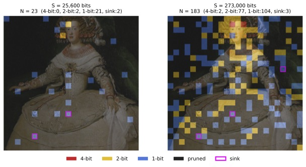
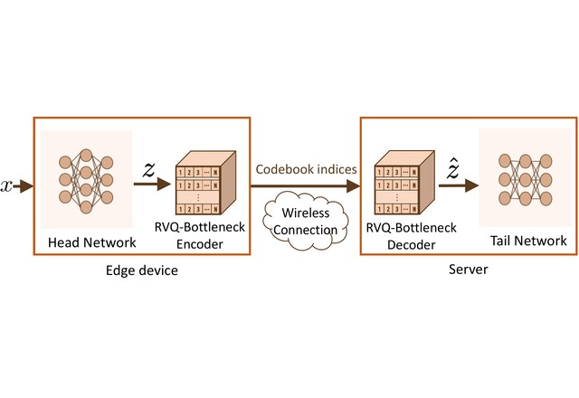
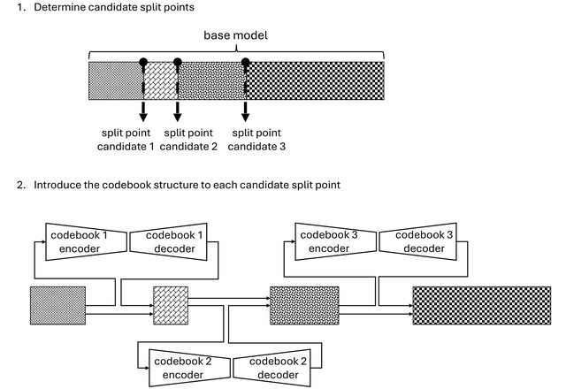
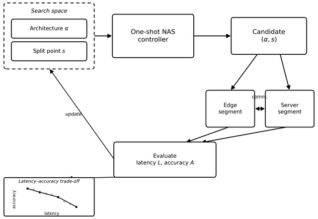
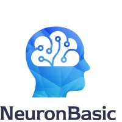

I am a Ph.D. candidate at Yokohama National University, advised by Prof. Shinichi Shirakawa.
My research makes large vision and vision-language models run under real hardware and bandwidth constraints. I work on split inference and model compression, spanning quantization, feature compression, and hardware-aware architecture design, currently extended to LLaVA-series VLMs. The goal is efficient multimodal LLM inference that stays practical across edge and cloud deployment.
I also work close to the hardware. I have implemented model inference in CUDA/C++ on NVIDIA Jetson and deployed INT8/FP16 quantized models to Qualcomm NPUs with SNPE/QNN, so my research is grounded in real latency, memory, and bandwidth budgets.
Fluent in Mandarin, English, and Japanese.




